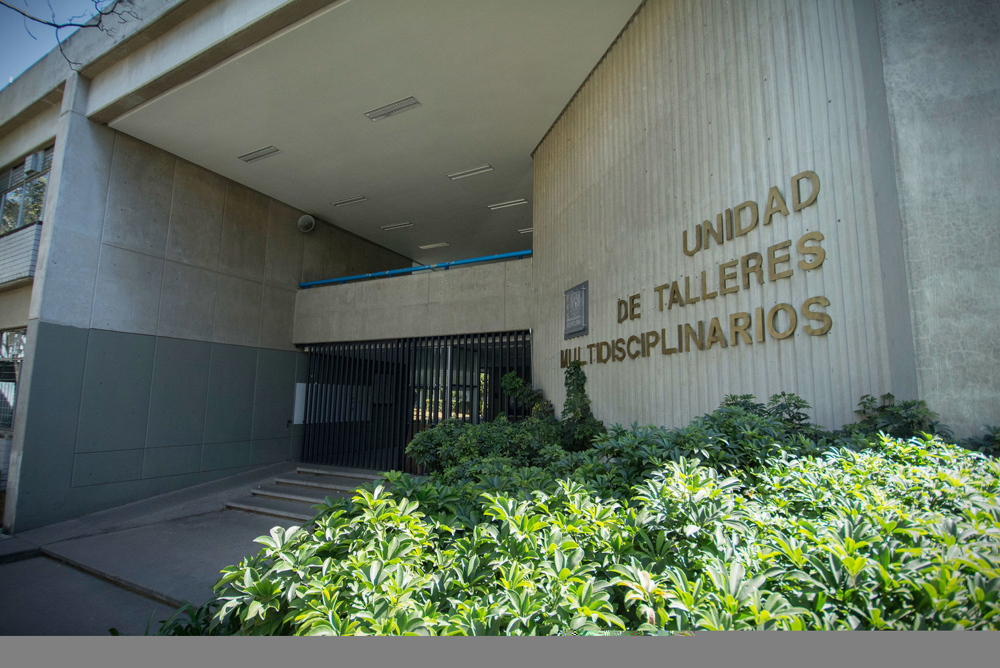
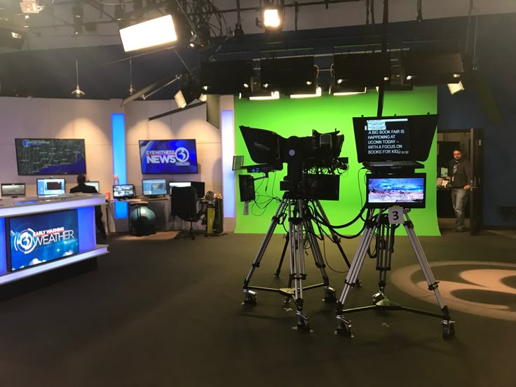
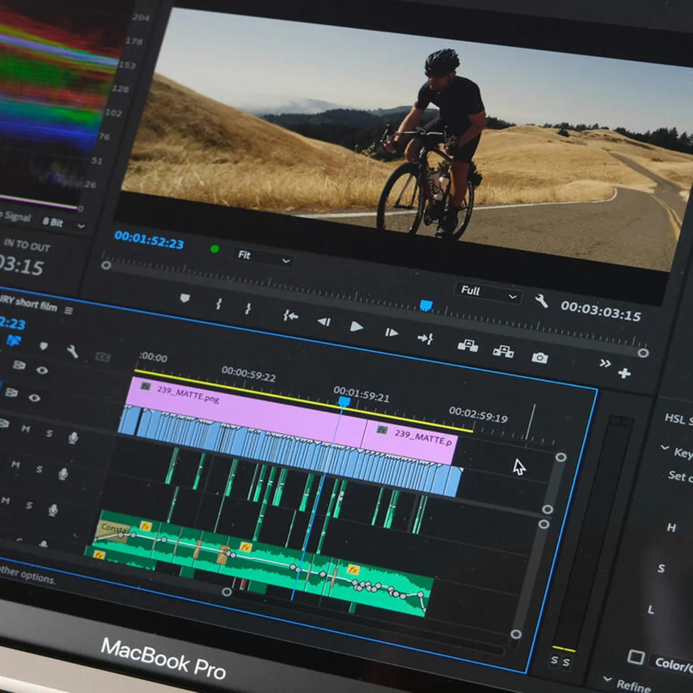
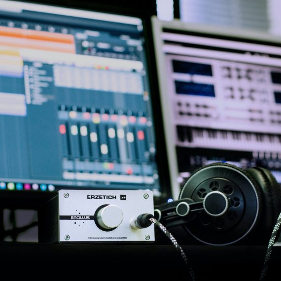

Si estás pensando en estudiar Comunicación en la FES Acatlán o acabas de entrar a la carrera, te tenemos buenas noticias: aquí no todo es teoría. Desde los primeros semestres, vas a tener acceso a talleres especializados que te preparan para el mundo real de los medios, la redacción y la producción audiovisual.
If this looks wonky to you it's because this browser doesn't support the CSS property 'aspect-ratio'.

Talleres de Redacción: tu primer contacto con la escritura profesional
En los primeros semestres, tendrás talleres de redacción donde aprenderás a escribir como se hace en los medios: claro, directo y con intención. No importa si quieres dedicarte al periodismo, a las redes sociales o a la comunicación institucional; saber escribir bien es clave, y aquí lo aprenderás con ejercicios prácticos y asesoría personalizada.

Talleres Multimedia: lo mejor en la práctica audiovisual
Más adelante en la carrera,específicamente en quinto semestre llegarás a los talleres multimedia, donde podrás explorar áreas como:
- Radio
- Televisión
- Fotografía
- Edición de video y audio
- Proyectos multimedia interactivos
Estos talleres están equipados con tecnología de muy buen nivel. Y no es exageración: por ejemplo, el Taller de Televisión 2 y el Taller de Radio 3 tienen incluso certificaciones nacionales, lo que garantiza que vas a trabajar con equipo de calidad profesional. Aquí podrás experimentar detrás de cámaras, frente al micrófono o en la edición de materiales que podrían salir al aire.
Lo importante: saldrás con experiencia real
Más allá de lo técnico, lo chido de estos talleres es que te ayudan a descubrir tus intereses, pulir tus habilidades y formar portafolios reales que te servirán más adelante, tanto en prácticas profesionales como en tu primer trabajo.
Conoce los talleres multimedia de la carrera de Comunicación
Una de las cosas más emocionantes de estudiar Comunicación en Acatlán es que no solo aprendes teoría: ¡también haces cosas! A partir de los semestres intermedios, tendrás acceso a talleres donde vas a poder experimentar con distintas áreas de la producción audiovisual y digital. Aquí te contamos un poco más sobre algunos de ellos:




